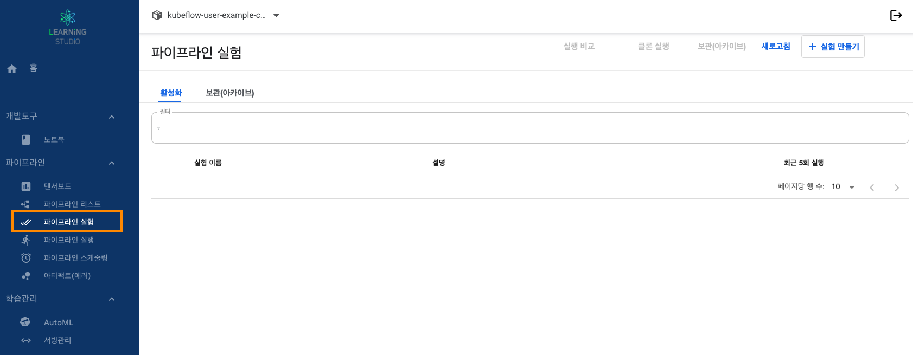
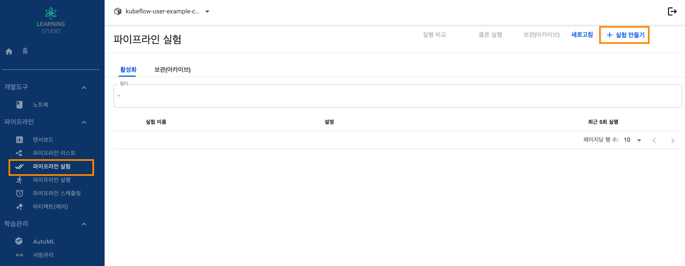
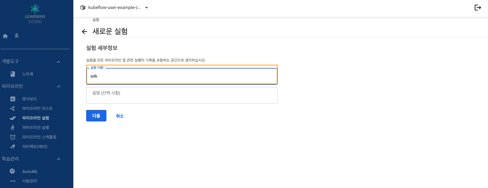
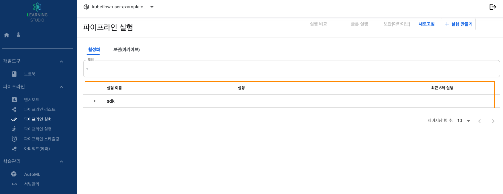

러닝스튜디오 기능별 가이드
Learning studio Manual
노트북
텐서보드
AutoML
하이퍼파라미터튜닝 예제
서빙
파이프라인
파이프라인 실험
파이프라인 스케줄링
파이프라인 SDK 안내
파이프라인_학습부터서빙
파이프라인예제 코드모음
볼륨
리소스 공유 관리
Step 1. 파이프라인 실험 리스트
1. 러닝스튜디오 대시보드 접속합니다.
2. 좌측에 메뉴에서
파이프라인 → 파이프라인 실험
탭을 선택입니다.
파이프라인의 다양한 구성을 시도할 수 있는 작업 공간

Step 2. 파이프라인 실험 만들기
1. 러닝스튜디오 대시보드 접속합니다.
2. 좌측에 메뉴에서
파이프라인 → 파이프라인 실험
탭을 선택입니다.
  